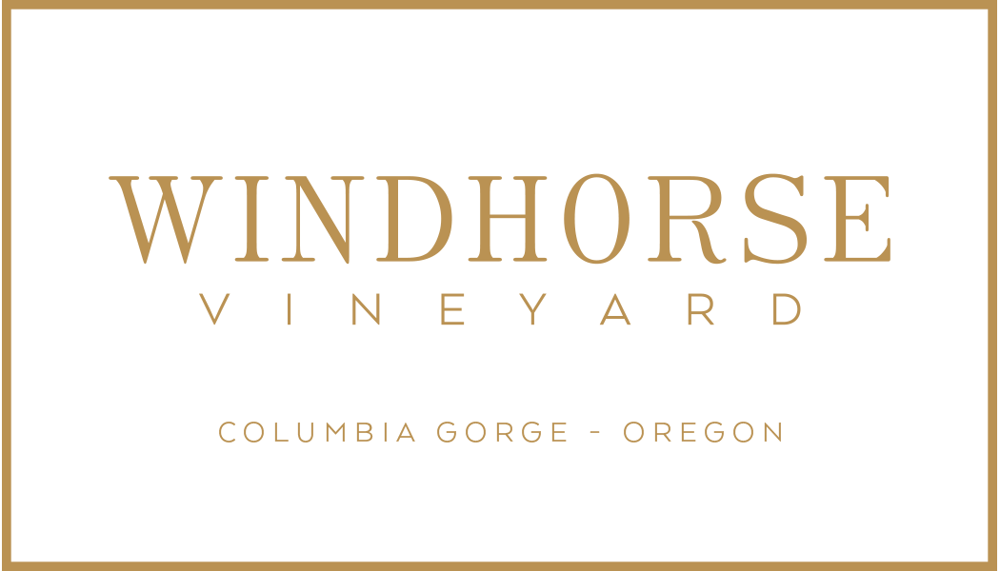
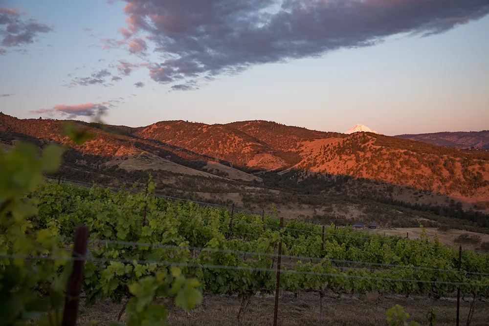
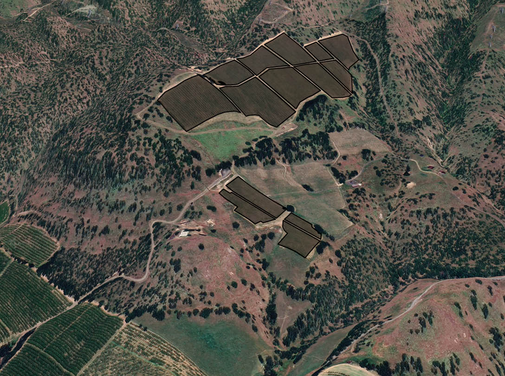
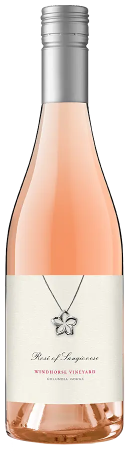

Windhorse Vineyard, Columbia Gorge, Oregon

Wines of quiet luxury, cultivated on volcanic canyon land.
Philosophy
“Wines that speak for the soil, the land, the plants, and the region.”
Windhorse Vineyard takes its name from lungta, the Tibetan windhorse, a mythic creature that carries positive energy and life force through the world. On the traditional prayer flag, the windhorse stands at the center, joined by a snow lion, a tiger, a garuda, and a dragon in each corner. Together they represent the five dignities of earth, air, fire, water, and space, the elements from which all things are formed.
It is a fitting name for a place shaped by fierce canyon winds and steep volcanic ground. Rather than lean on ornamentation, we let the fruit, the land, and a disciplined hand in the cellar speak for the wine.
We farm with those same elements in mind. Every choice on the estate is made to benefit the soil, the water, the air, the vines and wild species that share this land, the people who tend it, and the region as a whole.
Windhorse is one of only two vineyards in the Columbia Gorge to hold both L.I.V.E. and Salmon-Safe certification, a commitment to farming that protects the soil, the watershed, and the wild land the vines share.
The Vineyard
Steep ground, wild company.
Thirty-four planted acres rise to 1,300 feet within a 170-acre oak-pine-grass savannah, land held wild and protected from development, watched over by the Cascade volcanoes.
Volcanic canyon land
Alfisols weathered from volcanic sandstone under mixed oak-pine woodland, free-draining, mineral, and slow to give up their water.
Wind and full sun
Cloud-free summer days and relentless westerly wind thicken the skins of the red varieties, concentrating flavor and color through to harvest.
Columbia Gorge AVA
Five miles southwest of The Dalles, Oregon, in view of both Mt. Hood and Mt. Adams, new terroir, still being understood one vintage at a time.

Rooted in Terroir
Vineyard management
Day-to-day farming at Windhorse is led by Nick MacKay of Results Partners, a vineyard management company established in 1985. Results Partners works with growers across the Willamette Valley, Columbia Gorge, and Columbia Valley, bringing decades of hands-on, international farming experience to how our vines are trained, monitored, and picked.
Why Windhorse
A site built for grape growing.
Windhorse's vines climb to 1,325 feet, high enough to sit above the Arctic cold air that can pool below 600 feet in this valley and kill a vintage in a hard winter. Above that line, three site conditions do the real work of growing exceptional fruit.
West-facing exposure
Steep, west-facing volcanic slopes catch dramatic growing-season heat, driving the fruit to full sugar ripeness.
Strong westerly winds
Relentless wind imposes healthy stress on the vines, thickening the flavor- and color-producing skins of our red grapes.
Deep loam, deficit irrigation
Deep loamy soils hold water through the season; controlled deficit irrigation adds moderate stress once fruit colors up, balancing bold flavor against favorable acidity.
Estate Map
Vineyard Blocks
Hover or tap a pin for block detail and availability.

Estate Map
Vineyard Blocks
Hover or tap a pin for block detail and availability.
31.49 estate acres across 13 blocks, planted 2021–2024, rising from the 500’ valley floor to a 1,355’ high point.
Current Release
The Portfolio
Windhorse Vineyard is an estate vineyard for Capital Call Vintners in Walla Walla. Seven estate varietals, each labeled with its own hand-foiled seal highlight the craftsmanship and authenticity of Windhorse and serves as the central element of the brand identity for this estate wine.
A Sicilian Heritage
Windhorse is one of the very few producers of the Italian grape variety Nero d’Avola on the West Coast. The combination of calcium-rich soils, volcanic parent material, and a semi-arid climate creates an environment uniquely suited to this historic varietal, allowing us to craft a wine that is varietally true, structured, and expressive of place. Planted in honor of Alan Busacca’s Sicilian heritage, our Windhorse Nero d’Avola is both a nod to legacy and a continued evolution of our winemaking philosophy. Alan, a soil scientist, Ph.D., is a partner at Windhorse Vineyard and Capital Call Vintners.

Dark plum and blackberry, layered with cocoa powder and white pepper.

Structured and savory, with red currant and a graphite edge.

Bright cherry and dried herb, fine tannin, a savory finish.

Estate reds layered together: dark fruit, warm spice, long finish.

Wind-thickened skins give this red its color and its grip.

Orchard fruit and wet stone, with real acid to carry it.
Sun-ripened dark fruit with a rustic, spiced edge.

Pale copper pink, crisp red berry and citrus zest.

A bold red blend with dark fruit and a rustic, earthy core.
Gallery
The canyon, the mountainside, the vines.
Photographs from the estate, its steep ground, wild company, and the fruit it grows.
Day Immersions
Come sit in the wind.
Available seasonally from April through September
A curated wine tasting and picnic experience set against the stunning backdrop of Mill Creek Valley, Mt. Hood, and Mt. Adams. An unforgettable backdrop with plenty of photo opportunities. Designed for parties of four to ten, this intimate experience invites guests to explore the vineyard, its wines, and the unique landscape of the Columbia Gorge.
Guests will enjoy a guided conversation on the history of the Columbia Gorge AVA with Dr. Alan Busacca, soil scientist, Ph.D. Alan will share insights into the vineyard’s terroir, farming practices, and the region’s geology, alongside a wine flight featuring selections from Windhorse Vineyard.
Reservation Details
The Windhorse Experience is $150 per person, waived with a purchase of six bottles or more per person.
Capital Call Founder’s List members can enjoy this experience for $75 per person.
Reading Room
Notes on the Gorge.
Press coverage of the estate, and further reading on the people, soils, and history of the Columbia Gorge AVA.
- Old-Vine Gets New DigsOregon Wine Press · PDF
- The Local Niche Offers Opportunities During DownturnGood Fruit Grower
- Why Columbia Gorge Is America’s Hottest Wine RegionThe Wine Scribes
- Former Geology Professor Enjoys Seeing Plan to Grow Wine Grapes Come to Fruition2020 · PDF
- Pinot Noir, Zinfandel and Other Terroir-Driven Treasures of the Columbia GorgeWine Enthusiast